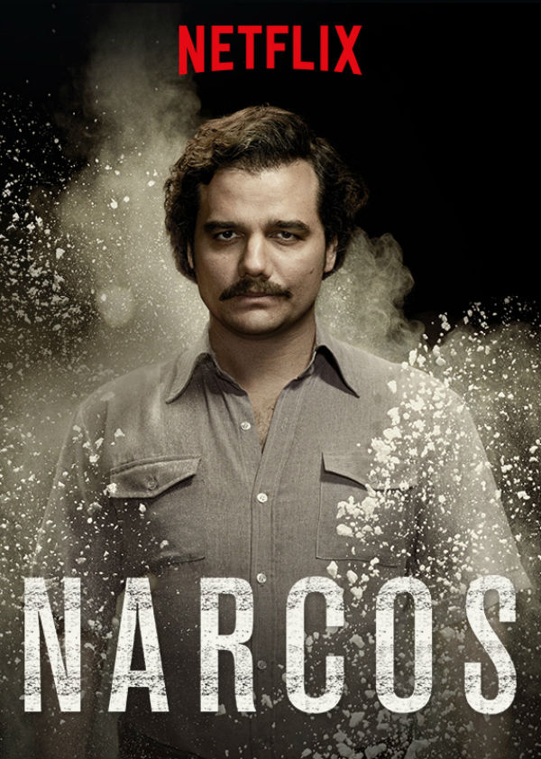

Ben Burak İnceoğlu. 19 yaşındayım. İstinye üniversitesi Yönetim Bilişim Sistemleri bölümünde okuyorum. Bu sayfaya front end eğitimimde yaptığım çalışmaları yazmakta olucağım.
Büyük Kaçış (Orijinal adı: Prison Break), ABD yapımı bir aksiyon dizisi. Hikâyesi Paul Scheuring tarafından ortaya atılmış ve FOX şirketi tarafından 2005 yılında dizi olarak hayatına adım atmıştır. Dizi genel olarak işlemediği bir suçtan dolayı idam cezası almış Lincoln Burrows (Dominic Purcell) 'u ve Lincoln'ün kardeşi Michael Scofield (Wentworth Miller)'ın kardeşini kurtarmak için tüm yasal yolların tükendiğini fark edip onu hapishaneden çıkarmak için bir kaçış planı yapması ve sonrasında gelişen olayları konu alır. Dizinin yapımcılığını Adelstein-Parouse Productions, Original Television ve 20th Century Fox Television işbirliğiyle üstlenmiştir.
Breaking Bad, Vince Gilligan tarafından tasarlanmış ABD drama televizyon dizisidir. 50 yaşında lisede kimya öğretmeni olan Walter White, bir oto yıkamada ek iş yapmaktadır ancak bir süre sonra ileri derecede akciğer kanseri olduğunu öğrenir.

Narcos, Amerikan suç draması ve aksiyon dizisi. 28 Ağustos 2015 tarihinde Netflix'te yayına başladı. İlk 2 sezonu Güney Amerika’daki suç dünyasının en büyük uyuşturucu baronu Pablo Escobar'ın hayatını,[1] üçüncü sezon Cali Karteli'ni anlatır. 10’ar bölümlük 3 sezondan oluşan dizinin ilk sezonunun tüm bölümleri 28 Ağustos 2015'te, ikinci sezonun tüm bölümleri 2 Eylül 2016 tarihinde, üçüncü sezonunun bölümleri ise 1 Eylül 2017 tarihinde yayımlandı
